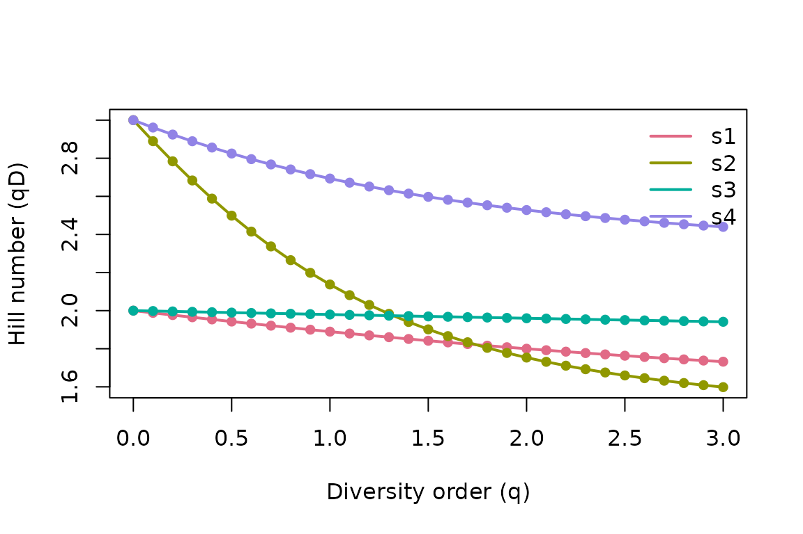
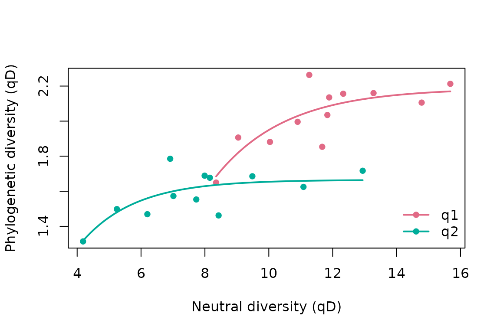

Profiles, evenness and redundancy
Source:vignettes/articles/profiles-evenness-redundancy.Rmd
profiles-evenness-redundancy.RmdBeyond a single diversity number, hilldiv3 offers three
diagnostics that describe the shape of a community:
profiles (how diversity changes with the order
q), evenness (how equitably abundance is
spread), and redundancy (how much
phylogenetic/functional structure is duplicated).
counts <- matrix(
c(10, 0, 5,
2, 8, 1,
3, 4, 0,
6, 2, 7),
nrow = 3,
dimnames = list(c("t1", "t2", "t3"), c("s1", "s2", "s3", "s4"))
)
tree <- ape::read.tree(text = "((t1:1,t2:1):1,t3:2);")Diversity profiles
A single q can mislead: two samples can have identical
richness but very different Shannon or Simpson diversity, and their
ranking can even flip as q increases. A
profile plots Hill numbers across a continuous sweep of
q, making the full picture visible. hillprof()
evaluates a fine grid of orders (0 to 3 by default):
prof <- hillprof(counts)
#> Computing neutral diversity profile over 31 orders.
head(prof)
#> <hilldiv3 result: neutral>
#> 6 rows x 3 cols
#>
#> q sample value
#> 1 0.0 s1 2.000000
#> 2 0.1 s1 1.988282
#> 3 0.2 s1 1.976692
#> 4 0.3 s1 1.965243
#> 5 0.4 s1 1.953945
#> 6 0.5 s1 1.942809The result is a tidy long-format object with a ready-made plot method — one declining curve per sample:
plot(prof)
How to read it:
- The height at
q = 0is richness; the height asq → ∞reflects dominance. - A flat curve means an even community (diversity
barely changes with
q); a steep curve means a few taxa dominate. - If two curves cross, neither sample is unambiguously more diverse — the answer depends on how much you weight rare taxa.
Profiles work for phylogenetic and functional diversity too, and you can grab a matrix instead of the tidy form (samples in rows, diversity orders in columns):
phylo_prof <- hillprof(counts, tree = tree)
#> Computing phylogenetic diversity profile over 31 orders.
mat <- hillprof(counts, out = "matrix")
#> Computing neutral diversity profile over 31 orders.
mat[, 1:3]
#> q0 q0.1 q0.2
#> s1 2 1.988282 1.976692
#> s2 3 2.889634 2.783926
#> s3 2 1.997940 1.995884
#> s4 3 2.961206 2.924319Evenness
Evenness asks how equitably abundance is distributed,
independent of richness. hilleven() expresses it as the
ratio of diversity of order q to richness
(qD / 0D), which is bounded in [0, 1]:
1 is perfectly even, lower values mean stronger
dominance.
hilleven(counts)
#> Computing neutral evenness of "q1" and "q2".
#> <hilldiv3 result: neutral>
#> 8 rows x 3 cols
#>
#> q sample value
#> 1 1 s1 0.9449408
#> 2 2 s1 0.9000000
#> 3 1 s2 0.7124362
#> 4 2 s2 0.5845411
#> 5 1 s3 0.9898132
#> 6 2 s3 0.9800000
#> 7 1 s4 0.8978279
#> 8 2 s4 0.8426966This is exactly the normalised height of the diversity
profile — a single sample’s profile flatness summarised as a number.
Reading down a column tells you how dominated each sample is;
s2 here is the least even.
Redundancy
Neutral diversity counts taxa; phylogenetic and functional diversity count distinct lineages or trait combinations. When taxa are closely related or functionally similar, much of the neutral diversity is redundant — losing a taxon costs little unique phylogenetic/functional diversity.
hillred() quantifies this by fitting the saturating
relationship between neutral diversity (x) and phylogenetic/functional
diversity (y) across samples, y = -a · 2^(-x / b) + c, and
summarising redundancy as 1 - b / max(x). It therefore
needs a tree or dist, and several samples
spanning a range of neutral diversity to fit the curve. The three-taxon
toy matrix above is too small, so here we use the bundled
gut_* data (24 taxa across 12 gut microbiome samples):
hillred(gut_counts, q = c(1, 2), tree = gut_tree)
#> <hilldiv3 result: phylogenetic>
#> 2 rows x 5 cols
#>
#> q redundancy a b c
#> 1 1 0.9022283 21.932974 1.533208 2.187965
#> 2 2 0.9098232 4.175493 1.166743 1.665108The returned table has the redundancy summary plus the
fitted a, b, c coefficients per
order. Values near 1 mean the assemblage is highly
redundant (taxa are phylogenetically/functionally interchangeable);
values near 0 mean each taxon contributes largely unique
diversity.
Like the profile, the result has a ready-made plot()
method. It draws the fit behind the redundancy number: each sample’s
neutral diversity against its phylogenetic/functional diversity, with
the fitted saturating curve per order. A curve that bends early and
plateaus signals high redundancy.

Note. Redundancy is a curve fit across samples, so it needs several samples spanning a range of neutral diversity. Orders where that spread is missing return
NAwith a warning rather than a number. In particular, richness (q = 0) often cannot be fit on well-sampled data: when nearly every sample contains nearly every taxon, richness barely varies across samples and the curve’s rate is unidentifiable — which is why the example above usesq = 1andq = 2.
References
- Hill, M.O. (1973). Diversity and evenness. Ecology, 54, 427–432.
- Chao, A., Chiu, C.-H. & Jost, L. (2010). Phylogenetic diversity measures based on Hill numbers. Phil. Trans. R. Soc. B, 365, 3599–3609.
- Alberdi, A. & Gilbert, M.T.P. (2019). A guide to the application of Hill numbers to DNA-based diversity analyses. Mol. Ecol. Resour., 19, 804–817.